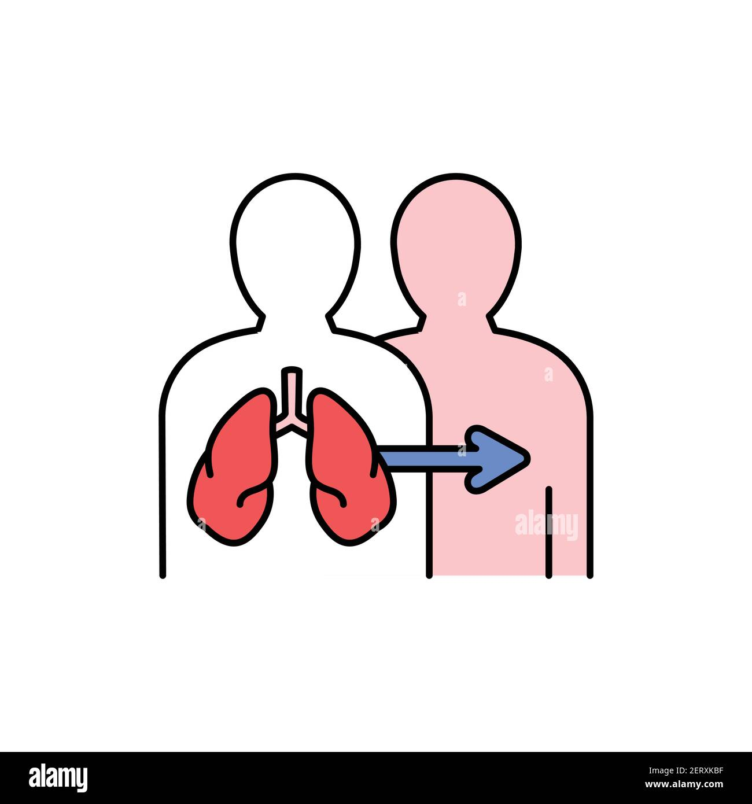

|
El trasplante de pulmón es una cirugía para reemplazar uno o ambos pulmones enfermos por pulmones sanos de un donante. Durante la operación, el cirujano hace un corte en el pecho y extirpa el pulmón enfermo. Después, el cirujano cose el pulmón nuevo a los vasos sanguíneos principales y las vías respiratorias. |
 |